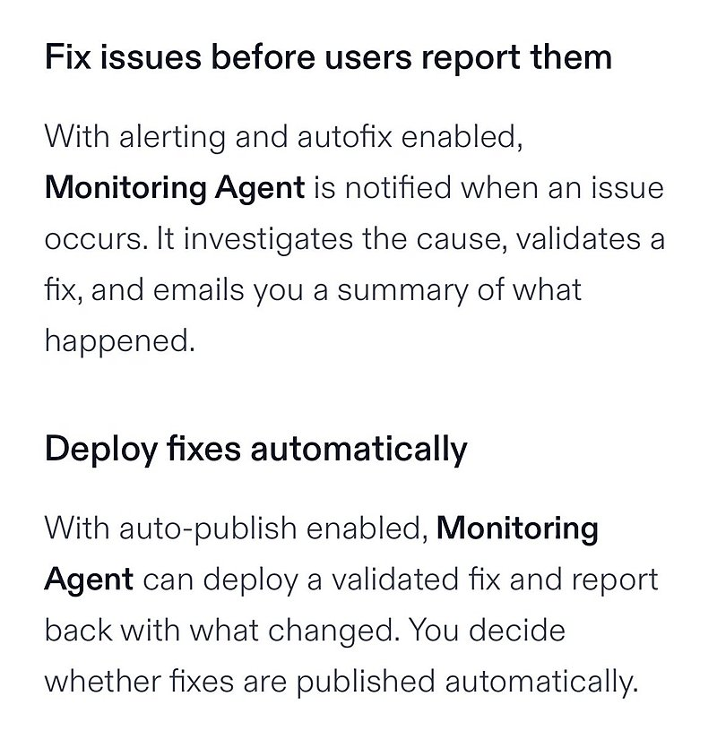

AI 日报 · 11月1日
Agent 开始自己修复问题，验收和权限要跟上
Replit 展示自动排障与修复，Serval 把模拟测试用于企业服务 Agent；No Priors 访谈提醒，自主执行需要审批、审计和逐步授权。
Agent 运维
模拟测试
企业权限
开源工具
4
Builder 动态
3
今日上榜项目
3
重点原文
1
公开视频
今日要点
自动修复与自动发布是两项独立选择
Replit 的 Monitoring Agent 可根据监控告警检查日志和代码，尝试修复并验证。用户可以只启用自动修复，保留人工审查；自动重新发布需另行开启，官方帮助页将其标为实验性功能。
先测试，再让企业服务 Agent 接触真实系统
Serval 10 月 29 日推出 Simulations，让 IT 团队用接近真实的请求测试帮助台 Agent，并在修改技能后检查既有场景是否退化。这是厂商描述的产品能力，实际覆盖率仍取决于测试场景。
深度对话
No Priors：企业 Agent 需要审批、日志与渐进授权
Sarah Guo 和 Elad Gil 访谈 Serval 联合创始人 Jake Stauch。以下依据节目逐字稿和原频道视频整理；关于市场格局的说法是嘉宾判断。
把代码审查的安全边界带给 IT 团队
Stauch 认为，编码 Agent 能让非工程团队创建自动化，但上线前仍需分阶段、审批和审计记录；代码生成本身不等于获准执行。
高权限动作采用明确的访问申请
访谈举例说明：个人 Agent 在大型企业通常只有有限权限。涉及服务账号或管理员能力时，应让具体动作通过确定性的审批流程，并记录一次性授权和执行结果。
后台自主 Agent 仍是未解问题
Stauch 称能够自行发现并处理企业问题的后台 Agent 仍是长期目标。他设想让 Agent 对每项新增能力逐步申请批准，而非一次获得无限权限。
资讯精选
测试、修复与开源世界模型
已检查 feeds.json 的四条中文 RSS：11 月 1 日上午均无当日新文。AI 前线 10 月 31 日报道的 Hy-Nomas 已追溯至腾讯混元仓库；以下保留原始发布的日期。
Builder 动态
产品边界、使用入口与跨工具上下文
Amjad Masad｜开启自动修复的应用可自行维护
Replit CEO 将启用 autofix 的托管应用称为“自维护软件”。官方说明显示自动修复可调查并验证问题，但自动重新发布需要另行选择；配图是原帖对监控和发布开关的说明。

Boris Cherny｜已验证 Ultra 账户移除五小时限额
Boris 发帖称，已验证的 Ultra 账户不再受五小时使用限额约束。具体生效状态应以账户页面为准，不能推及所有套餐。
Thibault Sottiaux｜移动端可切换多个账户
OpenAI 的 Thibault 表示移动端现可方便地切换多个账户，桌面端随后支持；这是入口更新，未给出桌面端具体日期。
Garry Tan｜让上下文跨 Agent 工具复用
Garry 介绍 GBrain Cloud，希望同一份上下文供多个 Agent 工具使用。这是其产品定位；不同工具的权限和执行结果仍要分别核对。
GitHub Trending
记忆、设计语言与本地 Agent 团队


取 11 月 1 日 GitHub Trending 当前榜单，避开近两期重点项目。星标、分叉、语言和主题为本次 GitHub API 快照；功能按仓库自述，未独立测评。
今日思考
今天的产品更新展示了两个方向：让 Agent 更快修复问题，也让团队更早发现错误。Serval 的模拟测试、Replit 的独立发布开关和访谈中的逐步授权，指向同一个操作问题：谁允许执行，怎样证明没有破坏原有流程。今日一问：如果你的 Agent 今晚自行修复线上故障，明早你会查看哪三份证据来决定是否保留这次改动？
参考来源